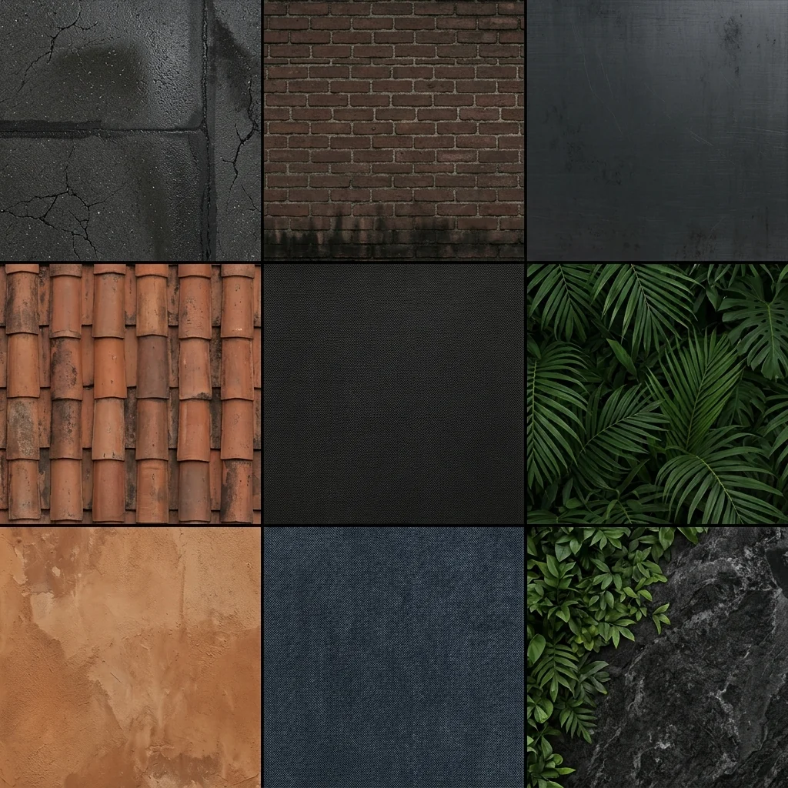

1. Cinco láminas cinematográficas de acto (sin texto, 1280×720)
Pensadas para las pantallas de transición de capítulo y tarjetas de portada; la tipografía la superpone el juego según idioma y accesibilidad.
2. Atlas PBR base 3×3 y 9 losetas de referencia (C‑A16)
Texturas ortográficas de referencia (1024×1024 y 9 cortes 256×256) con valores iniciales de roughness y metalness listos para UV-mapping en los 51 modelos GLB.

catalogo.json.3. Perfilado real de JS Heap: 4.0.1 vs PR #7 (`C‑M34`)
Medido en Chromium móvil 412×860 (CDP Performance.getMetrics, gpu: "software"). Destapa la retención de memoria al viajar entre ciudades.
4. Explorador de las 28 paradas de carretera (`G‑H22`)
4 paradas inventadas y creíbles por cada uno de los 7 biomas de MC.Planeta.BIOMAS, bilingües y con línea de ambiente.